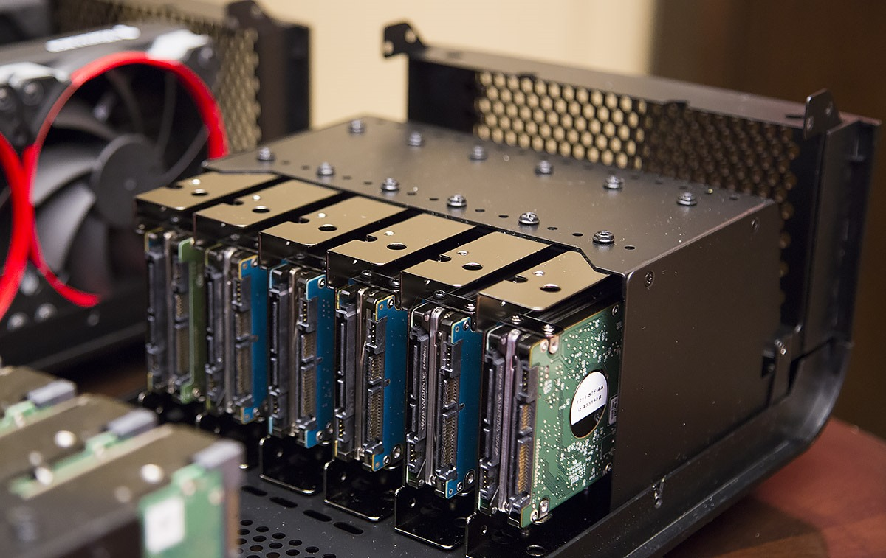
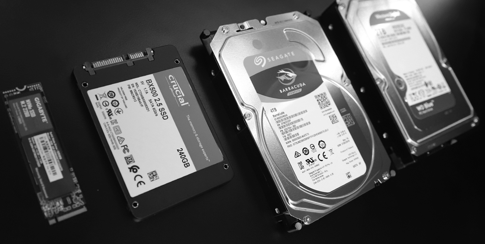

Storage
If you can recall, I mentioned how RAM is like short term memory. Using that same comparison, PC comparison can be seen as long term memory. It stores all the files, programs, images, videos, etc. Unlike RAM which clears upon reboot, storage is permanent (unless deleted manually) and will remain on your computer. When you are navigating file explorer (or finder on Mac computers), you are going through the storage of the computer. The size of storage is measured in gigabytes (GB) and 1000 gigabytes equals one terabyte (TB). Another important factor with storage is read/write speeds. This is basically a measurement of how fast a drive can load and save something to its storage.
Storage comes in many different shapes and sizes. The oldest and most common is a HDD, or a hard disk drive. A hard drive is bulkier and slower compared to some of the newer stuff. Another type is an SSD, or a solid state drive. SSD’s are much slimmer, and also have a quicker read/write speed. They are slowly becoming the norm, many modern PC’s and laptops come with SSD’s. As great as they are, they are pretty expensive, and the same amount of storage will cost more for a SSD than a HDD. Another type of storage drives are M.2. SSD’s. These are very similar to normal SSD’s regarding the way they operate, but they are much faster. These drives are slimmer and also have crazy fast read/write speeds. Disregarding money, they are the best choice for any PC and laptop. But unfortunately, M.2. drives are usually the most expensive. Regardless of the type of drive you eventually choose, they will all end connecting to your motherboard.
Click the next page button to learn about the motherboard!